Lower Kabete Road, Nairobi, Kenya
You can click on the logo to visit their website
This is a beautiful, natural hidden gem in the suburbs of the busy Nairobi city. It's low-key tranquil environment and family friendly vibes makes it a really frequented restaurant. Not to mention its exquisite food selection and cuisine.
I desire to travel to the Zen Gardens in Nairobi, Kenya, off Lower Kabete
Road, beacause I've heard it is known as a "slice of heaven" with
beautiful gardens and peaceful vibes where you can relax and celebrate.
Zen Garden is in Spring Valley, Nairobi, and I heard it has become known
for its two restaurants and full-service conference facility. It seems to
be a serene gateway for people looking for tranquility and a break from
the chaotic city.
The Zen Garden's social media presence also has a child-friendly Zen Padel
Indoor and Garden Terrace that is open from 9 am to 11 pm every day of the
week. The flexibility and approachability make Zen Gardens an attractive
choice for me and my fahm as visitors of any age and inclination.
And also Nairobi's Zen Garden holds a farmers market every month; a chance
to also go around and sample local produce and engage with the community.
This extra bit of culture just adds to the reason I'd love to visit the
Zen Gardens when in Nairobi.
Actaully the last part is prolly the main reason
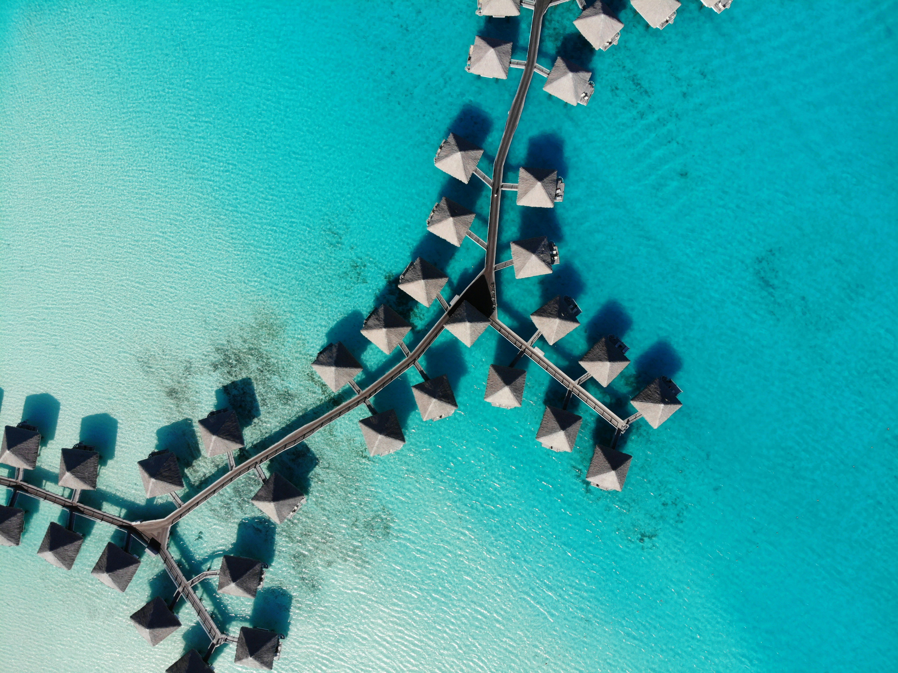

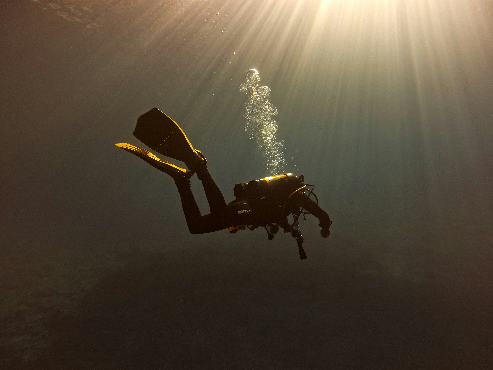
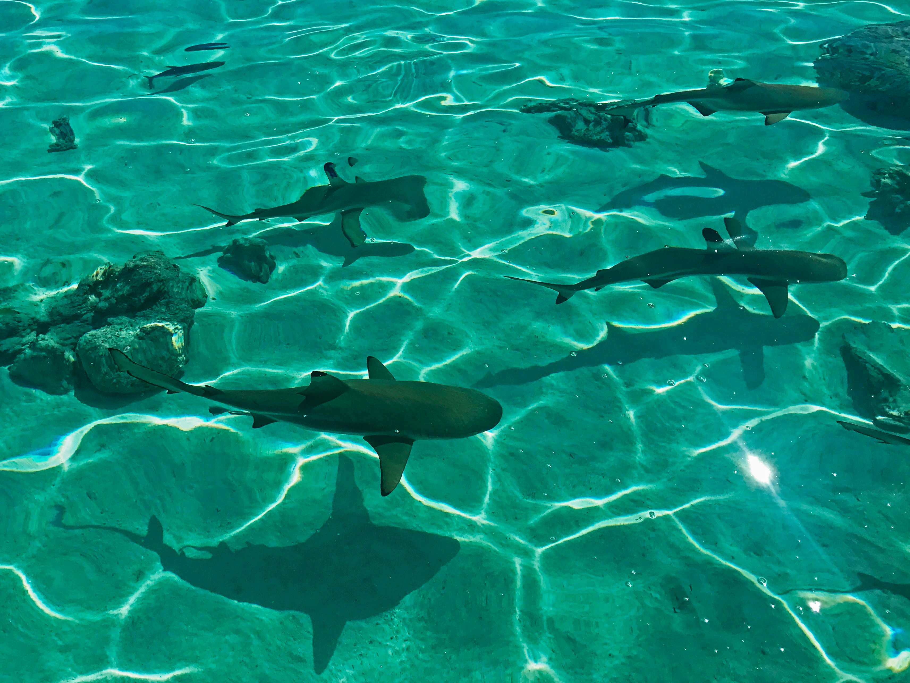
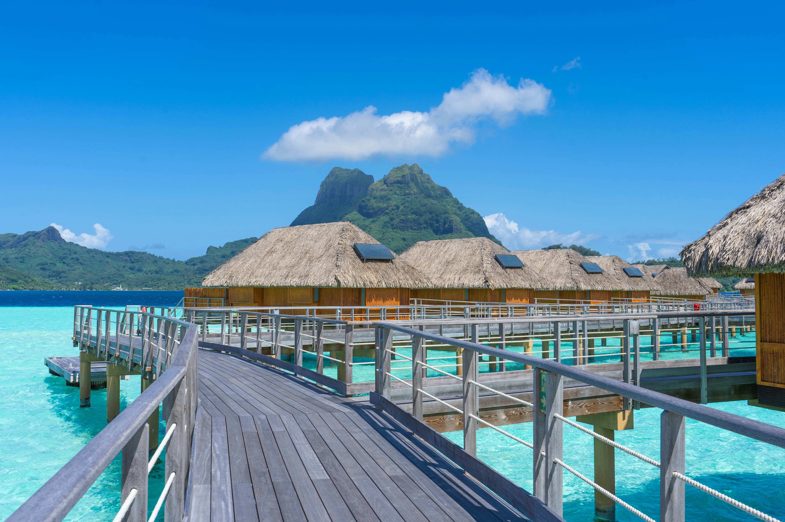

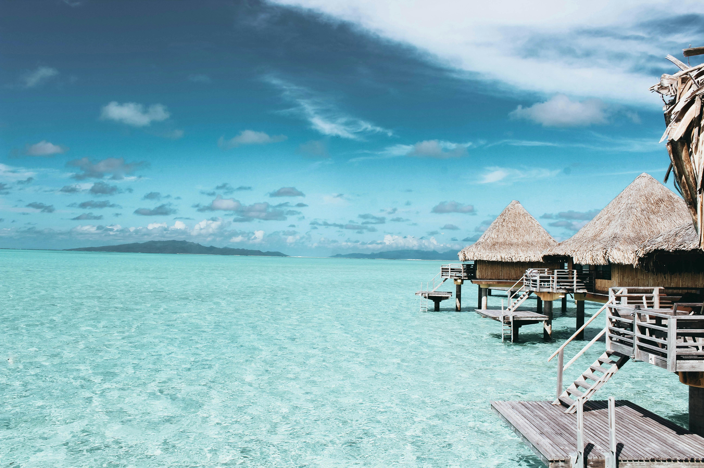
I did some research, and found that it is a small, South Pacific island located in the Society Islands of French Polynesia, specifically northwest of Tahit
Link to Bora Bora map locationI did some research, and, Bora Bora is a breathtaking island located in the South Pacific, approximately 165 miles (265 km) northwest of Tahiti. Known for its stunning turquoise lagoon and dramatic volcanic peaks, the island spans about 6 miles (10 km) long and 2.5 miles (4 km) wide.
When I think of Bora Bora, it's a real paradise in the South Pacific comes to mind, with crystal-clear turquoise lagoon contrasting against beautiful volcanic peaks. I'm drawn to the bright coral reefs, to explore the beauty beneath the water's surface, as well as those lavish overwater bungalows, creating the ideal place for relaxation. I just loved to walk through the charming streets of Vaitape, feel the local culture, and eat delicious Polynesean food. Bora Bora beguiles the senses and feeds the soul; it sleeps in the dictionary next to definition of paradise.


Is located in Narok County, Kenya, along the border of Tanzania
Link to Maasai Mara geolocationIs a wildlife sanctuary in southwest Kenya, It borders the Serengeti national Park of Tanzania, sepereated by the mara river along the borders of Kenya and Tanzania. It has a variety of wildlife
I can say that as a guy I have always had this fascination for wildlife, being glooed to NAT GEO wild. I'd love to experieence camping, I myself being a scout, though have never camped in a game reserve, would find that as a unique experience. I would love to observe and share the culture with the local tribesmen. I have a fascination for adventure and uniqueness, which I think would be satisfied by the variety of excuisite high-end hotels, lodgings and restaurants in maasai Mara
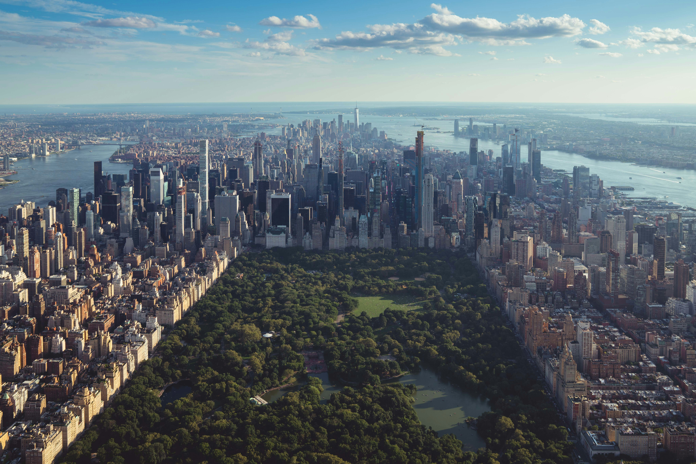
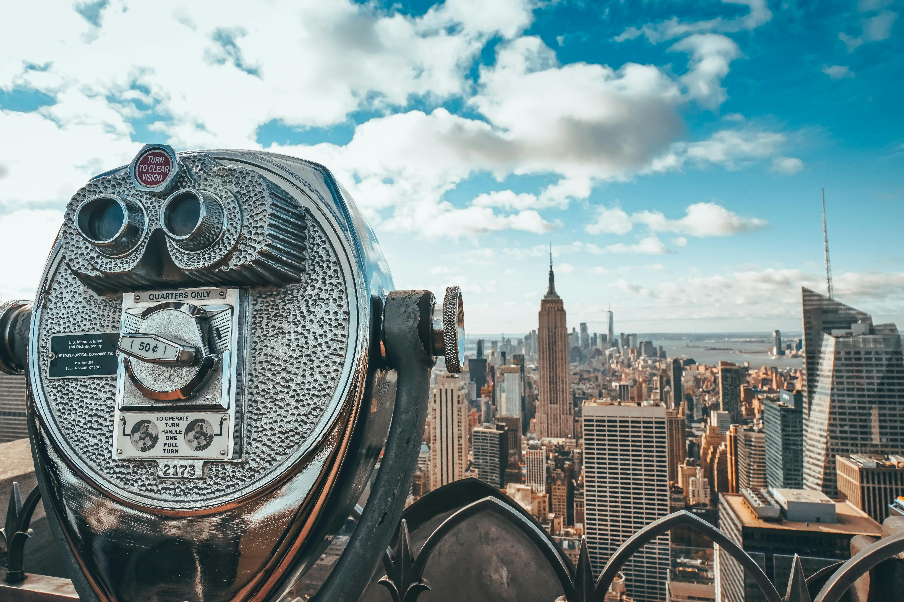
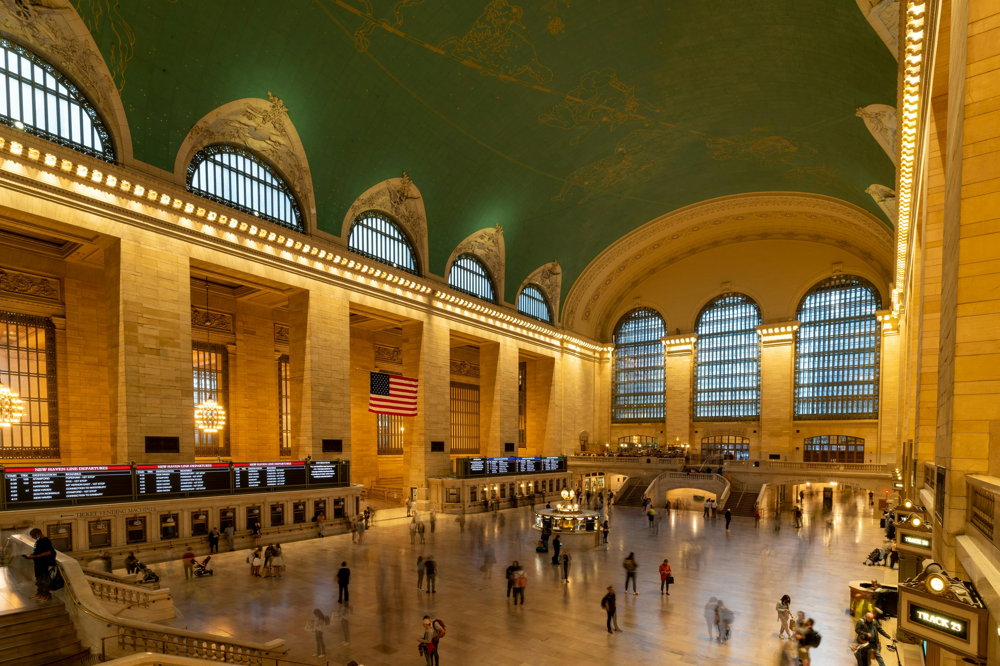
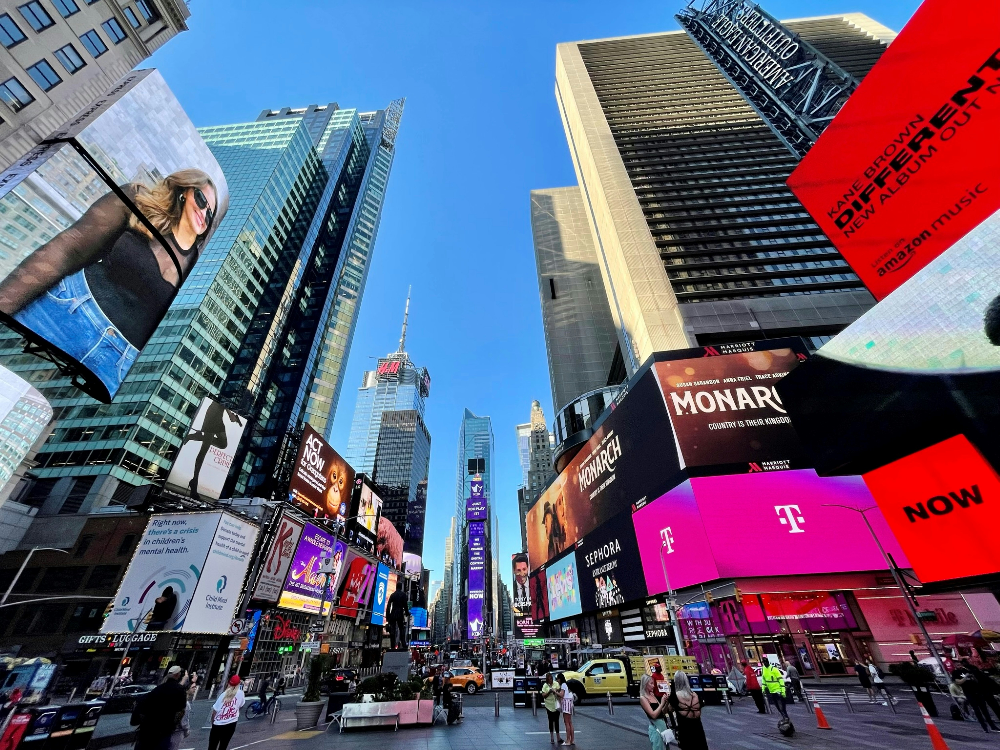

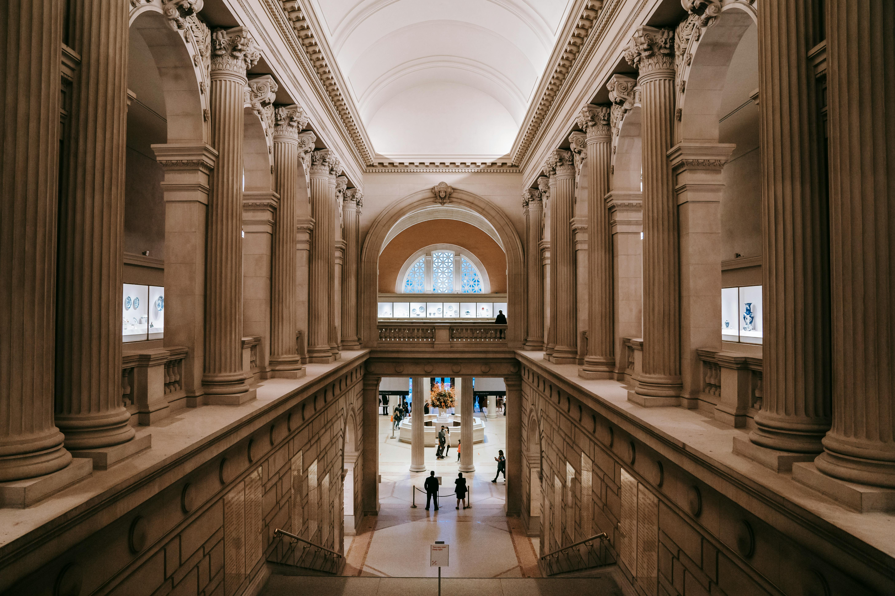
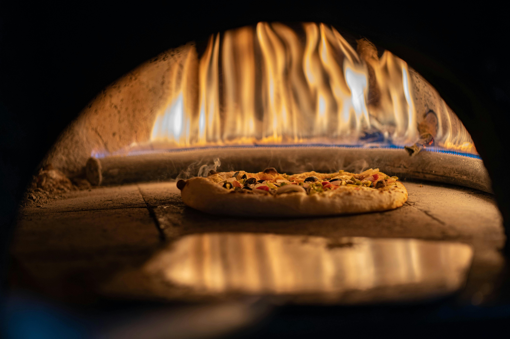
Manhattan is the heart of New York city, having numerous skyscrapers


Located in Le Mans, Sarthe, France
This is a historical track where 24 hours of le mans was raced, having a mix of public roads and pavement. To this day it is still used to race occasionally
I have a sincere passion for motor sports and would love to see in person the races I watch on my television or my phone, interact with the racers themselves and get to have the live experience. I would also love to explore the beutiful cities of France, with their elegance, simplicity and culture.